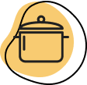

<ion-content fullscreen>
  <ion-header>
    <ion-toolbar>
      <ion-buttons slot="start">
      <ion-back-button  color = "dark" defaultHref="tabs/profile"></ion-back-button>
      </ion-buttons>
      <ion-title>Kitchen Appliances/Tools</ion-title>
    </ion-toolbar>
    <div class="dietary-blob">
      
    </div>
  </ion-header>
  <div class="selection-content ion-padding-horizontal">
    <p class="ion-padding-vertical ion-text-center">Select all appliances that you use.</p>
    <div class="list ion-padding-vertical">
      <ion-list *ngFor="let item of toolList">
        <ion-item lines="none">
          <ion-label>{{item.text}}</ion-label>
          <ion-checkbox slot="start" [(ngModel)]="item.isChecked" [value]="item.value"
          (ionChange)="itemChange($event)"></ion-checkbox>
        </ion-item>
      </ion-list>
    </div>

  </div>


</ion-content>
<ion-footer>
  <ion-button class="button-large" (click)="saveTools()">Save Changes</ion-button>
</ion-footer>
